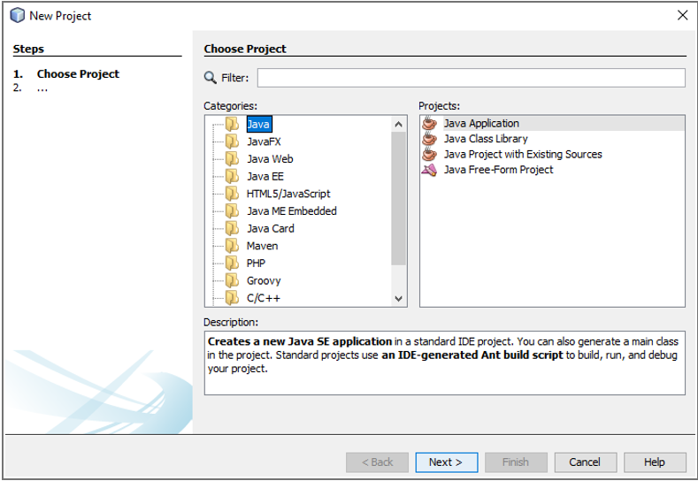
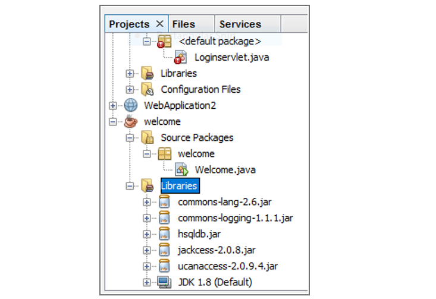
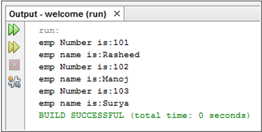

Week – 2
Step 1: Create Java Application
Create a new Java application file using any Java IDE such as Eclipse or NetBeans.
Step 2: Copy the Source Code
Copy the following Java program into the created Java application file.
package welcome;
import java.sql.*;
import java.util.*;
public class Welcome {
public static void main(String args[]) {
try {
Class.forName("net.ucanaccess.jdbc.UcanaccessDriver");
Connection con = DriverManager.getConnection(
"jdbc:ucanaccess://D:\\vrsec.accdb"
);
Statement st = con.createStatement();
ResultSet rs = st.executeQuery("select * from it");
while (rs.next()) {
System.out.println("Emp Number is: " + rs.getInt(1));
System.out.println("Emp Name is: " + rs.getString(2));
}
}
catch (Exception e) {
System.out.println(e.getMessage());
}
}
}
Step 3: Database Setup
Extract the given MS-Access database file and copy vrsec.accdb to the D: drive.

Step 4: Add Required JAR File
Add the required UCanAccess JAR files to the project build path.
Step 5: Execute the Program
Run the Java application. Output will be displayed in the console.
